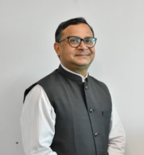
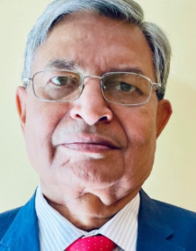
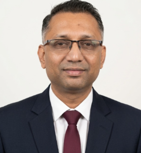
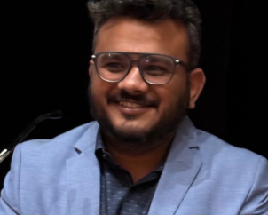
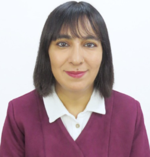
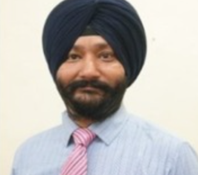
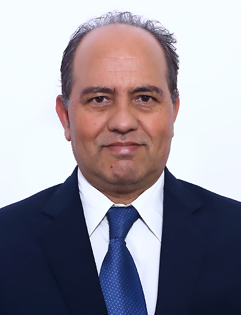
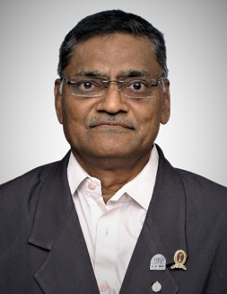

Global Fellow Emeritus
A lifetime recognition for eminent scholars and leaders whose work has substantially shaped their field, influenced policy, or advanced global research collaboration.
GIRA recognizes scholars, practitioners, and institutional leaders whose work advances rigorous research, mentorship, and global collaboration. Fellowship recognition is honorary and based on a review of academic, professional, and research contributions.
A lifetime recognition for eminent scholars and leaders whose work has substantially shaped their field, influenced policy, or advanced global research collaboration.
Awarded to distinguished experts with significant experience, sustained research contributions, and a record of publications, institutional leadership, or policy engagement.
Recognizes early- to mid-career researchers and professionals whose work shows strong potential and a collaborative approach.
GIRA recognizes eminent academic, institutional, and policy leaders whose work has shaped higher education, governance, management research, and global academic collaboration.

Prof. Elisante Gabriel is an internationally respected academic, strategic management expert, and public sector leader from Tanzania. He currently serves as the Chief Court Administrator of the Judiciary of Tanzania and has previously held several senior government positions, including Permanent Secretary in multiple ministries. With extensive experience across academia, governance, international consulting, and strategic leadership, he has contributed significantly to institutional development and public service transformation. Prof. Gabriel has also served as Lecturer and Visiting Professor at international universities in Africa, Europe, and India. His work reflects a strong commitment to interdisciplinary research, strategic management, leadership development, and evidence-based policy advancement.

Dr. Sanjiv Mittal is a distinguished academic leader and higher education administrator with extensive experience in university governance, academic leadership, and institutional development. He has served as Vice Chancellor of Sambalpur University and has held several senior positions at Guru Gobind Singh Indraprastha University (GGSIPU), including Professor, Director Academic Affairs, and Dean. With nearly two decades of academic and administrative experience, Dr. Mittal has contributed significantly to strengthening higher education systems, academic excellence, and institutional governance in India. His expertise spans academic administration, leadership development, curriculum advancement, and university management, making him a respected figure in the field of higher education.

Prof. Djamchid Assadi is an internationally recognised scholar, researcher, and academic based in France, associated with Burgundy School of Business and Université Paris Dauphine - PSL. With over two decades of experience in teaching, research, and international academic engagement, he has made significant contributions to the fields of marketing strategy, communication, and management education. Prof. Assadi has actively participated in global academic conferences and has been associated with leading European institutions as Professor and Researcher. His academic work reflects a strong commitment to international scholarship, interdisciplinary learning, and the advancement of global research collaborations across institutions and cultures.

Dr. K. L. Johar is a distinguished academician, educationist, and institution builder with extensive experience in higher education leadership and university administration in India. He is best known as the Founding Vice-Chancellor of Guru Jambheshwar University of Science and Technology and has also served as Pro-Vice Chancellor of Kurukshetra University. Dr. Johar has made significant contributions to academic governance, institutional development, and the promotion of science and technology education. Widely respected for his visionary leadership, he has played an important role in strengthening higher education systems and fostering academic excellence through his long-standing association with universities and educational planning bodies across India.
GIRA recognizes established researchers for their scholarship, mentorship, and academic leadership across institutions.

Professor Satish Kumar is the Tan Sri Azman Hashim Endowed Chair Professor of Finance and Banking and Professor of Finance and Accounting at Sunway University, Malaysia, with over 23 years of experience in academia, research, executive education, and academic leadership. His expertise spans Finance, Corporate Governance, Sustainability, Behavioural Finance, Financial Markets, Accounting, Bibliometric Analysis, and Evidence Synthesis. Recognized among the world's highly cited scholars, he has published over 300 research outputs in leading FT50, ABDC, Scopus, and Web of Science-indexed journals and serves in editorial leadership roles for several prestigious international journals. Prof. Kumar has received numerous distinguished research awards and remains committed to advancing impactful research, doctoral mentorship, executive education, and industry-academia collaboration in finance and management.
GIRA recognizes researchers and professionals who combine scholarly work, practical expertise, and a commitment to collaboration.
Dr. Ruchika Joshi is an Assistant Professor of Marketing with a Ph.D. and over six years of research experience. Her expertise spans Consumer Behaviour, Human Resource Management (HRM), and Organizational Behaviour (OB). She has published extensively in high-impact, peer-reviewed journals, and her work has been featured as a case study by Ivey Publishing. Dr. Joshi has presented her research at several international conferences and is committed to bridging academia and industry through impactful, evidence-based research. Her current interests focus on consumer psychology and workplace dynamics, contributing valuable insights for both businesses and policymaker

Dr. K. S. Gupta is a distinguished academic, leadership mentor, and management expert with over six decades of experience in academia, industry, research, and executive development. He holds a Ph.D. from IIT Bombay and currently serves as Director of the KSG Center for Quality Minds, Bengaluru. His expertise includes leadership development, organizational excellence, technology management, and cross-cultural management. Dr. Gupta has guided 10 Ph.D. scholars, authored over 110 research publications, and received several prestigious awards, including the Best Teacher and Research Excellence awards. He continues to bridge academia and industry through research, consulting, executive training, and mentorship.
Dr. Vinay Khandelwal is a faculty of finance and analytics. Currently, he serves as an Assistant Professor at the ICFAI Business School, and is associated with University of Stirling as an Adjunct Faculty for teaching courses such as Quantitative Methods in Finance, Financial Derivatives, and Alternative Investments. Dr. Khandelwal also supervises doctoral scholars in the fields of Decentralized Finance (DeFi), ESG & Financial Performance, and Public Procurement Policies in African Nations. He is a skilled and experienced researcher in Sustainability Reporting, Business Digitization, ESG Compliance, Securities Markets, and Asset Pricing Models.
Dr. Koonal Sil is an Associate Professor of Management with over 16 years of academic, administrative, and industry experience. He currently serves as a faculty member at IQ City United World School of Business, having previously held leadership roles such as Dean of Management at IMAS Business School and Principal at the Institute of Advance Education & Research. He holds a Ph.D. in Management, an Honorary D.Litt., and is currently pursuing a D.Litt. from UEM-Kolkata. His core expertise lies in financial management, banking, accounting, and curriculum design. Across his career, he has engaged in international teaching assignments with institutions like the University of South Florida and Lincoln University College. Furthermore, he serves on multiple academic boards, acts as an incubation mentor, and has earned prestigious honours, including recognition from the Obama Foundation for outstanding performance

Dr. Ashish Mahendrabhai Kothari is a Professor, Head of the Department of Electronics & Communication Engineering, and Director of the Centre for Research, Innovation, and Translation at Atmiya University, Rajkot. His research expertise includes Artificial Intelligence, Machine Learning, IoT, Embedded Systems, and Digital Image/Video Processing. He has authored five Springer books, published over 25 Scopus/Web of Science-indexed papers, and holds 13 patents. Dr. Kothari has successfully supervised 13 Ph.D. scholars and received several prestigious honours, including the Nation Builder's Award (2024) and ISTE-Gujarat's Best Innovative Researcher Award (2023). He continues to contribute to research, innovation, and academic leadership through mentoring, industry collaborations, and technology-driven initiatives.

Dr. Abhijeet Vikramaditya Tiwari is an Assistant Professor specializing in Marketing, Digital Marketing, Consumer Behaviour, Media Management, and Entrepreneurship. He holds a Ph.D. in Marketing and has expertise in teaching, research, curriculum development, and academic administration. His research focuses on consumer behaviour, branding, digital entrepreneurship, sustainability, and emerging technologies, with publications in reputed Scopus and ABDC-indexed journals. Dr. Tiwari is committed to experiential learning through case studies, industry projects, and digital tools, while actively contributing to curriculum development, student mentoring, and academic leadership
Dr. Pinaz Tiwari is an Assistant Professor of Marketing at IIM Bodh Gaya with expertise in Marketing, Consumer Behaviour, Tourism, Hospitality, and Business Research. She holds a Ph.D. from Jamia Millia Islamia and has published extensively in leading Scopus and ABDC-indexed journals, with contributions to international books and research on consumer behaviour, tourism, and sustainability. Dr. Tiwari has received several prestigious recognitions, including the Young Tourism Researcher Award and Young Service Researcher Award. She actively contributes to academia through research mentorship, editorial roles, international collaborations, and executive education, while fostering industry-oriented and evidence-based learning.

Mrs. Nidhi Arora is a Review Officer with the Government of Uttarakhand, bringing over seven years of experience in public administration, policy review, financial management, and governance, along with two decades of expertise in mentoring, training, and capacity building. She has extensive experience in policy implementation, instructional leadership, and public sector training, and is a certified e-Office Trainer under the Government of Uttarakhand. Nidhi has completed over 200 professional certifications through the Government of India's iGOT Karmayogi platform and has been recognized for her contributions to governance, education, and public service, including a nomination for the Chief Minister Good Governance Award. She remains committed to advancing public administration, leadership development, and institutional excellence through impactful learning and policy initiatives
Dr. Himanshu Prajapati is an Assistant Professor of Decision Science and Program Chair (MBA Logistics & Supply Chain Management) at GLA University, Mathura. His research expertise includes Supply Chain Management, Reverse Logistics, Circular Economy, Sustainable Supply Chains, Industry 4.0, and Multi-Criteria Decision Making (MCDM). He has published extensively in leading Scopus, SCIE, and ABDC-indexed journals and actively contributes as a reviewer for several prestigious international journals. Dr. Prajapati has received the Smt. Godavari Devi Best Teacher Award and is committed to advancing research, academic leadership, curriculum development, and industry collaboration while mentoring postgraduate and doctoral scholars.
Dr. Nishchala Sripathi is a marketing academic and researcher with expertise in Marketing, Consumer Behaviour, Entrepreneurship, Strategy, and Health Marketing. She brings over eight years of industry experience in financial services marketing, five years of research experience, and several years of teaching MBA and BBA students at leading institutions, including ICFAI Business School, NMIMS, and Symbiosis. Her research has been published in reputed ABDC, Scopus, and Web of Science-indexed journals, with a focus on consumer behaviour, health-conscious purchasing, and digital health information. Dr. Sripathi is committed to bridging industry and academia through research, executive education, and experiential learning, fostering future business leaders with practical and evidence-based insights

Dr. Satinder Pal Singh is a Professor and Head of the Department of Business Administration at Chandigarh University, with over 23 years of experience in academia, research, administration, and corporate consultancy. His expertise spans Statistics, Operations Research, Predictive Analytics, Research Methodology, and Business Analytics. Dr. Singh has guided numerous Ph.D. scholars, published extensively in Scopus and UGC-indexed journals, and led several industry consultancy projects across marketing, consumer behaviour, and analytics. A recipient of multiple teaching and institutional excellence awards, he is committed to advancing research, academic leadership, industry collaboration, and data-driven decision-making through mentorship, innovation, and interdisciplinary research.
Dr. Rachit Agarwal is an Assistant Professor of Finance at MIT World Peace University, Pune, with over nine years of experience in teaching, research, and academic leadership. His expertise includes Financial Management, Investment Behaviour, FinTech, Financial Analytics, and Research Methodology. He has published extensively in Scopus and ABDC-indexed journals and books, with research focusing on sustainable finance, AI in finance, blockchain, ESG, and financial behaviour. Dr. Agarwal is actively involved in curriculum development, industry collaborations, faculty development, and research training, and has received several recognitions, including Best Faculty of the Year and Best Paper Awards for his contributions to finance education and research.

Dr. Shamsher Singh is a Professor and Head of the MBA Department at Banarsidas Chandiwala Institute of Professional Studies, New Delhi, with over two decades of experience in academia and an additional 20 years of distinguished service in the Indian Air Force. His expertise spans Marketing Management, Customer Relationship Management (CRM), International Business, Consumer Behaviour, Digital Marketing, Banking, and Strategic Management. He has authored and edited several books, published extensively in leading Scopus, ABDC, and peer-reviewed journals, and has successfully guided doctoral scholars in management. Dr. Singh actively contributes to academic leadership through curriculum development, conference organization, faculty development programmes, and research mentorship. He remains committed to advancing industry-oriented research, management education, and academic excellence through impactful teaching and scholarly contributions.

Prof. (Dr.) Paresh Shah is a distinguished academic, researcher, and management educator with over 47 years of combined industry and academic experience. An alumnus of IIM Ahmedabad and holder of a Ph.D. in Finance, he specializes in Finance, Accounting, Economics, Research Methodology, Management Control Systems, and Social Sciences. He has authored 24 books published by leading international publishers, including Oxford University Press and Wiley, and has received several prestigious honours, including the Peter Drucker Management Excellence Award, Lifetime Distinguished Scholar Award, and Certificate of World Record. Prof. Shah actively contributes to academia through research, faculty development programmes, doctoral supervision, editorial leadership, and curriculum development, remaining committed to advancing excellence in management education and applied research.
Dr. Vikram is an Associate Professor and Area Chair – Finance at MIT World Peace University, Pune, with over 22 years of combined academic and industry experience. His expertise spans Financial Analytics, Econometrics, Behavioural Finance, ESG and Sustainable Finance, Corporate Valuation, and Time-Series Analysis. He has published extensively in Scopus, Web of Science, ABDC, and UGC-CARE indexed journals, with research focusing on financial markets, volatility modelling, public finance, and investment behaviour. Dr. Vikram is actively engaged in doctoral supervision, research mentorship, curriculum development, and academic leadership, and has received multiple Best Paper Awards and the Best Faculty Award for his contributions to finance research and higher education
Dr. Jinal Sameer Shah is an Assistant Professor of Marketing at NMIMS with over 18 years of experience in teaching, research, academic leadership, and editorial management. Her expertise spans Marketing, Brand Management, Consumer Behaviour, Digital Marketing, Service Marketing, and Marketing Education. She has published extensively in leading ABDC and Scopus-indexed journals, authored multiple books and case studies, and serves as an Associate Editor for reputed academic journals. Dr. Shah has received several prestigious recognitions, including the Best Faculty Award, Best Researcher Award, LinkedIn Top Voice, and multiple Best Paper and Best Case Awards. She remains committed to advancing research, curriculum innovation, industry collaboration, and mentoring future marketing professionals through evidence-based and experiential learning.
Dr. Aastha Tripathi is an Assistant Professor at the Tata Institute of Social Sciences (TISS), Mumbai, specializing in Human Resource Management, Organizational Behavior, Leadership, Learning & Development, and Artificial Intelligence in the workplace. Her research focuses on employee well-being, organizational innovation, leadership, creativity, and workplace behaviours, with publications in leading ABDC and Scopus-indexed journals and an Ivey Publishing case study. Dr. Tripathi actively contributes to academia as an Associate Editor, editorial board member, reviewer for several prestigious international journals, and an invited speaker. She is committed to advancing impactful, evidence-based research while fostering leadership development, organizational excellence, and future-ready HR practices through teaching, research, and industry engagement
Dr. Swati Mathur is an Assistant Professor at the Institute of Public Enterprise (IPE), Hyderabad, with over two decades of experience in academia, research, industry, and executive training. Her expertise spans Finance, Financial Literacy, FinTech, Human Resource Management, Leadership, and Organizational Behaviour. She has published extensively in leading Scopus, ABDC, and Web of Science-indexed journals, authored several books, and served as Co-Project Director for multiple ICSSR-funded research projects. Dr. Mathur actively contributes to academia through research, corporate training, Management Development Programmes (MDPs), and Faculty Development Programmes (FDPs), and has received several prestigious recognitions, including the Best Teacher Award and Best Research Presentation Award. She is committed to advancing impactful research, academic leadership, financial inclusion, and industry-oriented learning.
Dr. Parvez Ahmad is an Assistant Professor at SRM University–AP with expertise in Marketing, Consumer Behaviour, Brand Management, Digital Platforms, and Research Methodology. His research focuses on consumer behaviour in food delivery apps, technology adoption, sustainability, circular economy, and digital consumer experiences, with publications in leading ABDC and Scopus-indexed journals. Dr. Ahmad actively contributes to research through experimental, qualitative, and quantitative studies while mentoring students in research methodology and advanced data analytics. He is committed to bridging academic research and industry practice through evidence-based teaching, innovative research, and technology-driven marketing insights.
Dr. Yasmin Yaqub is an Assistant Professor at GITAM (Deemed to be University), Bengaluru, specializing in Human Resource Management, Organizational Behaviour, Leadership Development, Learning & Development, and Strategic People Management. Her research focuses on training transfer, leadership interventions, organizational learning, and employee development, with publications in leading ABDC, Scopus, Web of Science, and Emerald-indexed journals. Dr. Yaqub actively contributes to academia as a reviewer for reputed international journals and conferences and has received the Emerald Literati Best Reviewer Award and Best Presenter Award for her research contributions. She is committed to advancing evidence-based HR research, academic excellence, curriculum innovation, and leadership development through impactful teaching, research, and professional engagement.
Dr. Vinay is an Assistant Professor in the Business Analytics & IT area at IMT Nagpur, with expertise in Business Analytics, Service Marketing, Text Mining, Big Data Analytics, Artificial Intelligence, and Consumer Behaviour. His research focuses on online reviews, hospitality analytics, AI-driven consumer insights, and text mining, with publications in leading ABDC and Scopus-indexed journals. Dr. Vinay actively contributes to academia through research, faculty development programmes, workshops, and executive training in Python, R, Power BI, SPSS, Tableau, and data analytics. He is committed to advancing data-driven research, interdisciplinary collaboration, and experiential learning by integrating emerging technologies with business and marketing analytics.
Dr. Shivangi Jaiswal is an Assistant Professor specializing in Digital Marketing, B2B Marketing, Sustainability, Consumer Behaviour, and AI in Business Education. With expertise in curriculum design, simulation-based learning, and academic leadership, she has taught at leading institutions including MIT World Peace University, GLA University, and Noida International University. Her research focuses on green marketing, sustainable development, digital transformation, and consumer behaviour, with publications in reputed journals and edited books. Dr. Jaiswal actively contributes to accreditation initiatives, faculty development, executive training, and international academic collaborations, and is committed to advancing industry-oriented, experiential, and evidence-based management education.
Dr. Rahul Roy is an Assistant Professor of Finance at MIT World Peace University, Pune, with expertise in Finance, Financial Risk Management, Asset Pricing, Banking, Machine Learning, and Quantitative Analytics. He brings over eight years of combined industry and academic experience, including extensive work in credit risk, model validation, AML compliance, and AI-based financial models for global financial institutions. His research has been published in leading ABDC, SSCI, Scopus, and Web of Science-indexed journals, focusing on asset pricing, macroeconomics, volatility modelling, behavioural finance, and machine learning. Dr. Roy actively contributes to academia through research, curriculum development, doctoral mentoring, and professional training, and has received several prestigious recognitions, including the Best Researcher Award and Best Paper Award.
Dr. Rushabh Trivedi is an Assistant Professor at the Ram Charan School of Leadership, MIT World Peace University, Pune, specializing in Organizational Behaviour, Human Resource Management, Leadership, and AI-enabled management education. His research focuses on employee well-being, innovative work behaviour, digital learning, self-leadership, workplace psychology, and sustainability, with publications in leading Scopus-indexed journals, Springer books, and IVEY Publishing case studies. Dr. Trivedi actively contributes to academia through curriculum development, research mentorship, peer reviewing, faculty development programmes, and academic administration. He is committed to advancing evidence-based management research, AI-integrated learning, and experiential education while fostering leadership development and organizational excellence
GIRA fellows share their experience with other researchers, mentor emerging scholars, and contribute to projects across disciplines and institutions.
Fellows support research design, publication planning, faculty development, and institutional research capacity.
Fellows contribute to multidisciplinary work in research, policy, development, and management education.
Fellows take part in roundtables, research summits, policy discussions, and academic exchanges.
Academics and research professionals with a record of inquiry, publication, or institutional contribution.
Industry and development leaders who bring applied insight to research, policy, and management education.
Policy leaders bring public-interest experience to evidence-based dialogue and research.
Senior academic and administrative leaders who help partner institutions strengthen research capacity.
Institutions and scholars can contact GIRA about research mentorship, advisory work, and academic collaboration.